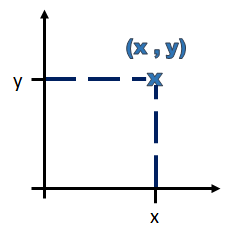

Converting Between Polar and Cartesian Coordinates
Learn About Polar and Cartesian Coordinates
Polar and Cartesian coordinates are two different ways of describing the position of a point on a graph.
This widget allows you to click a point on a graph. It will then tell you the point's coordinates in both polar and Cartesian coordinates.
You can also enter the point's coordinates in either polar or Cartesian coordinates. It will then plot the point.
Cartesian Coordinates

x-coordinate:
y-coordinate:
Polar Coordinates

radial coordinate:
angular coordinate: